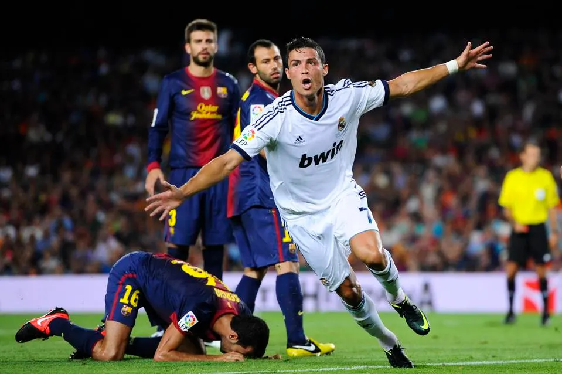
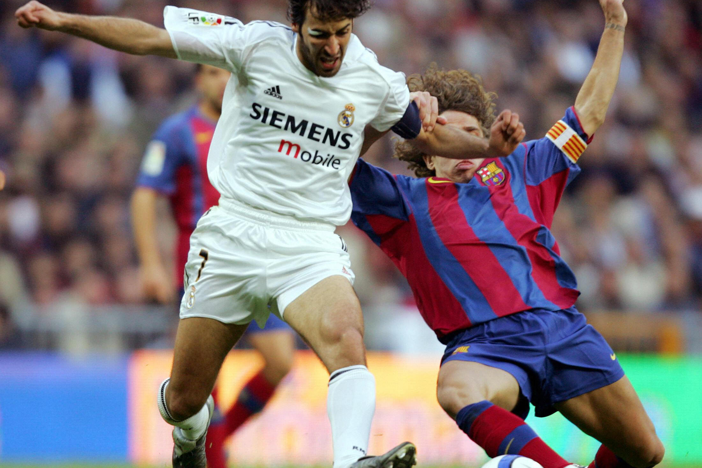
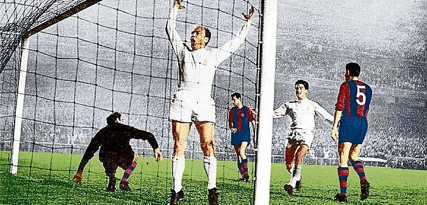
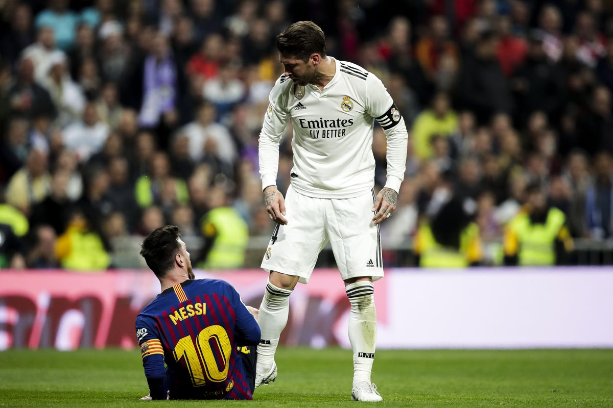

Legends

Cristiano Ronaldo
Arguably the greatest of all time, Cristiano Ronaldo left Manchester United to join
Real Madrid in 2009. In his time at Madrid, Ronaldo managed to score an astounding
451 goals in just 438 games. He also won 4 Champions League titles with Real Madrid.
This included Real Madrid's infamous UCL 3-peat in 2016, 2017, and 2018.
Cristiano also won 4 Ballon D'ors while at Real Madrid. He eventually left the club
in 2018. However, he cemented his status as a club legend during his stay, and is still the
club's top scorer to this day.

Raúl
A Real Madrid icon, Raúl spent 16 iconic years at the club, joining in 1994.
Over his time at Madrid, he scored 323 goals in 741 appearances, making him one of the most
prolific figures in club history. Raúl led the team to 6 La Liga titles and 3 Champions League
trophies, including the memorable 2000 and 2002 victories. He was also a key figure in Madrids
early 2000s dominance. Raúl's leadership and his commitment to the club left an indelible mark,
and he remains a symbol of Real Madrid's legacy, even long after his departure in 2010.

Alredo Di Stéfano
Alfredo Di Stéfano was a pivotal figure in Real Madrids rise to global dominance.
Joining the club in 1953, Di Stéfano's incredible versatility and skill made him a true icon.
He played a crucial role in securing 5 consecutive European Cup titles between 1956 and 1960.
His ability to influence matches in any position on the field was unmatched, along with his leadership.
Di Stéfano's legacy is forever etched in the clubs history, and he remains one of the most
influential players to have ever worn the famous white shirt.

Sergio Ramos
Sergio Ramos is one of Real Madrids most iconic defenders of all time.
Joining the club in 2005, Ramos quickly became a cornerstone of Madrid's defense and leadership.
He played a crucial role in winning 4 Champions League titles and 5 La Liga trophies.
Ramos was known for his ability to score crucial goals, often in the most decisive moments.
His fierce determination and leadership on the field earned him respect from teammates and opponents.
The legacy of Ramos as one of the best defenders in football history will forever be linked to Madrid.